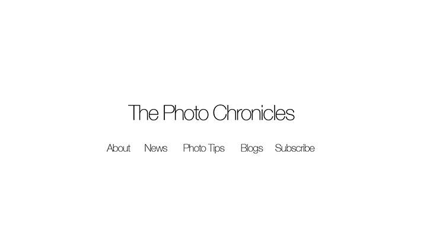
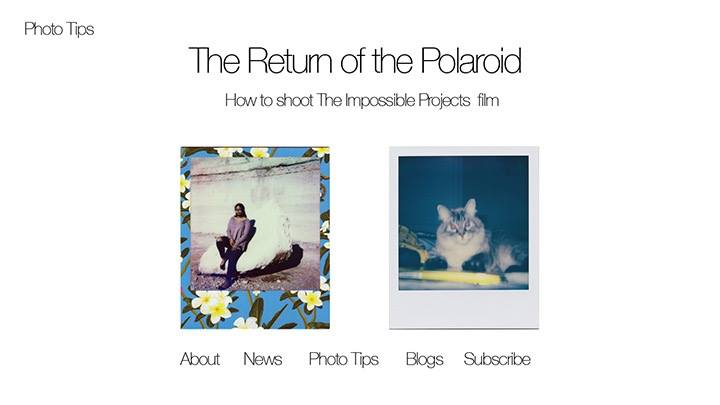
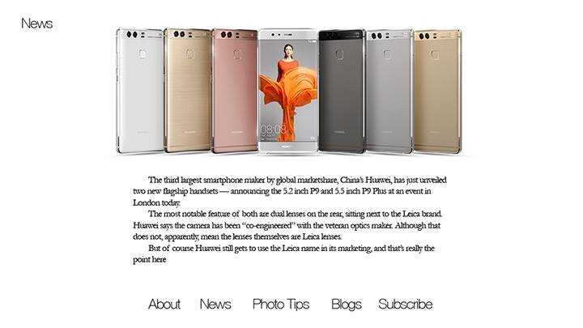

What Kind of Magazine Would You Make?
by Orlando Mendiola
May 12, 2016
Subject Matter: Phtography. It would be a daily publication that would have one or mores tories published everyday. Stories would range from interviews with photographers to tutorials on how to shoot. There would be a photographer of the month feature with an in depth look at a persons work or showcase up and coming photographers.
Audience: 18-50
How often I would Publish? Daily
Small Independent Magazine


